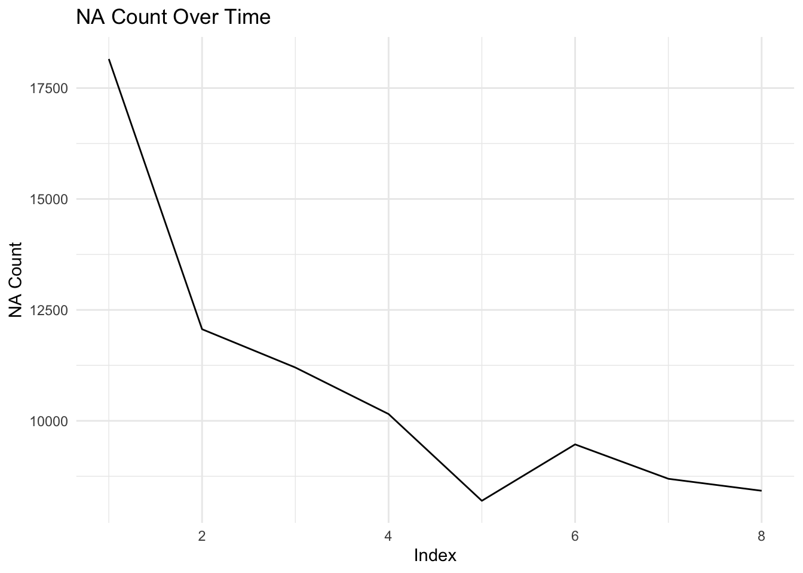
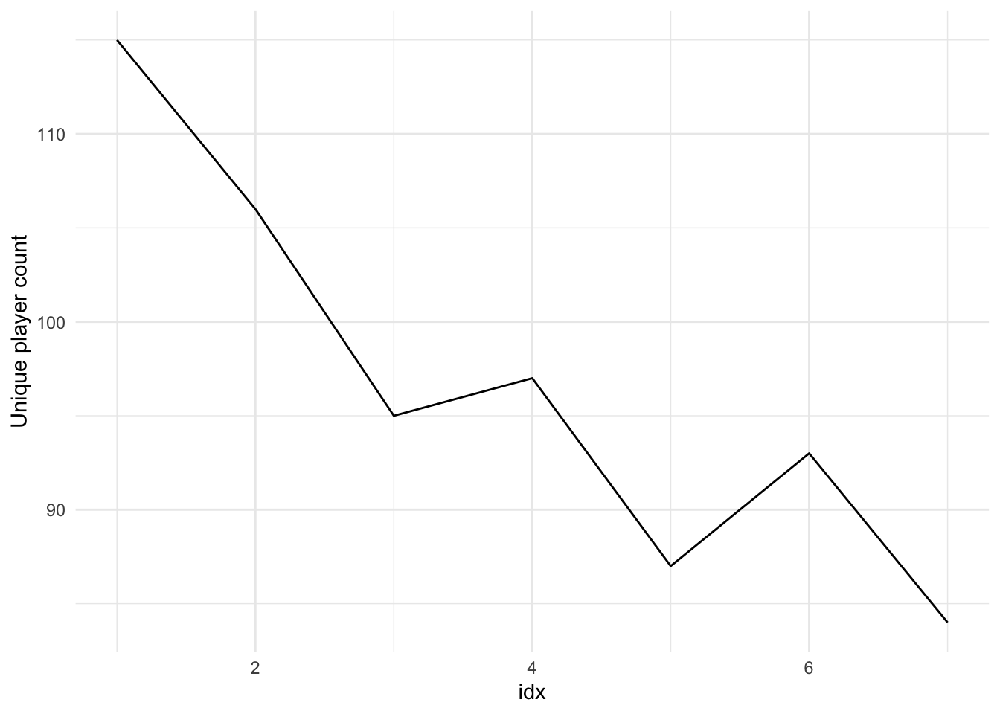

d.gamebatch <- merge(d.8, d.9, by = c("batchID"), all=T)%>%
select(-contains("LastChangedAt"))
d.playergamebatch <-merge(d.6, d.gamebatch, by="gameID", all = T)
d.59 <-merge(d.playergamebatch,d.5, by = c("gameID", "playerID"), all = T)%>%
select(-contains("LastChangedAt"))
rm(d.8, d.9, d.6, d.gamebatch, d.playergamebatch, d.5)
d.stageID <- merge(d.1, d.3, by = c("stageID", "gameID", "roundID"), all = T) %>%
select(-contains("LastChangedAt"))
d.playerstageround <-merge(d.stageID,d.2, by = c("roundID", "gameID"), all = T)%>%
select(-contains("LastChangedAt"))%>%
select(gameID, stageName, roundID, confidence, guess, playerID, stageID,idx)
rm(d.1, d.2, d.stageID, d.3)
d.all <-merge(d.playerstageround,d.59, by = c("playerID", "gameID"), all = T)%>%
select(gameID, playerID, stageName, treatmentName.x, ended.x, roundID, confidence, guess, stageID.x, idx, emojiArray, exitSurvey, participantID, recipient,treatment.x, chat,messages, participantIdentifier)%>%
mutate(
emojiArray = str_remove_all(emojiArray, "\\s"),
emojiArray = str_extract_all(emojiArray, "üêá|üêøÔ∏è"),
nRabbits = sapply(emojiArray, function(x) sum(x == "üêá")),
nSquirrels = sapply(emojiArray, function(x) sum(x == "üêøÔ∏è")),
nCritters = nSquirrels + nRabbits,
mleEstimate = nRabbits / (nRabbits + nSquirrels)
)
rm(d.59, d.playerstageround)Experiment1
Import packages
Read in data
Merge files
calculations to merge desired with played games
d.allgameplayers <- d.all %>%
distinct(playerID, gameID, .keep_all = TRUE) %>%
group_by(gameID) %>%
mutate(
nRabbitsGame = sum(nRabbits, na.rm = TRUE),
nSquirrelsGame = sum(nSquirrels, na.rm = TRUE),
nCrittersGame = sum(nCritters, na.rm = TRUE),
mleGame = round(nRabbitsGame / (nRabbitsGame + nSquirrelsGame),4),
prob = round(nCritters / nCrittersGame, 4),
entropy = round(-sum(ifelse(prob > 0, prob * log(prob), 0)), 4),
representation = round(mean(abs(mleEstimate - mleGame)), 4)
) %>%
ungroup()
d.gamelist <- d.allgameplayers%>%
group_by(gameID) %>%
slice(1) %>%
ungroup()n_unique <- nrow(unique(decode[c("nCritters", "mleGame")]))
n_unique[1] 116dup_rows <- decode %>%
group_by(nCrittersGame, mleGame) %>%
filter(n() > 1) %>%
count(designatedGame) %>%
filter (n==1)
duplicated_rows <-decode %>%
filter(designatedGame %in% dup_rows$designatedGame)
# Print the rows
print(dup_rows)# A tibble: 107 × 4
# Groups: nCrittersGame, mleGame [24]
nCrittersGame mleGame designatedGame n
<int> <dbl> <chr> <int>
1 15 0.733 16424 1
2 15 0.733 24638 1
3 16 0.75 10079 1
4 16 0.75 1311 1
5 16 0.75 22300 1
6 16 0.75 7680 1
7 16 0.75 8743 1
8 17 0.706 1010 1
9 17 0.706 10605 1
10 17 0.706 16002 1
# ℹ 97 more rows#looks like 10297 and 3627 are randomly generated identical pairs and 16039 only differs by one (so representation is different)
d.decode <- decode%>%
distinct(designatedGame, .keep_all = TRUE)d.allgameplayers <- d.allgameplayers %>%
mutate(across(c(nCrittersGame, representation, entropy), as.character))
d.decode <- d.decode %>%
mutate(across(c(nCrittersGame, representation, entropy), as.character))
d.allgameplayers <- d.allgameplayers %>%
mutate(representation_formatted = sprintf("%.3f", as.numeric(representation)))
d.decode <- d.decode %>%
mutate(representation_formatted = sprintf("%.3f", as.numeric(representation)))
d.allgameplayers <- d.allgameplayers %>%
left_join(
d.decode %>%
distinct(
nCrittersGame, nRabbitsGame, nSquirrelsGame, mleGame, representation_formatted, designatedGame, entropy_bin, representation_bin, nCrittersGame_bin
),
by = c("nCrittersGame", "nRabbitsGame", "nSquirrelsGame", "mleGame", "representation_formatted")
)Warning in left_join(., d.decode %>% distinct(nCrittersGame, nRabbitsGame, : Detected an unexpected many-to-many relationship between `x` and `y`.
ℹ Row 32 of `x` matches multiple rows in `y`.
ℹ Row 1 of `y` matches multiple rows in `x`.
ℹ If a many-to-many relationship is expected, set `relationship =
"many-to-many"` to silence this warning.d.all <- d.all %>%
left_join(
d.allgameplayers %>%
select(nSquirrelsGame, nRabbitsGame, nCrittersGame, gameID, mleGame, prob, entropy, representation, designatedGame, entropy_bin, representation_bin,nCrittersGame_bin) %>%
distinct(gameID, .keep_all = TRUE),
by = c("gameID")
)
#d.allgameplayers <- d.allgameplayers %>%
# filter(!is.na(designatedGame))
#removes the one w 5 playersCount which games are present
decode <- decode %>%
mutate(across(c(nCrittersGame, representation, designatedGame), as.character))
d.allgameplayers <- d.allgameplayers %>%
mutate(across(c(nCrittersGame, representation, designatedGame, treatmentName.x), as.character))
d.count.chat <- d.allgameplayers %>%
filter(str_ends(treatmentName.x, "interactive"))
d.count.slider <- d.allgameplayers %>%
filter(str_ends(treatmentName.x, "slider"))
# Count the occurrences of each designatedGame in decode
decode_counts <- decode %>%
count(designatedGame, name = "decode_count")
# Count the occurrences of each designatedGame in d.count.chat
chat_counts <- d.count.chat %>%
count(designatedGame, name = "chat_count")
# Count the occurrences of each designatedGame in d.count.slider
slider_counts <- d.count.slider %>%
count(designatedGame, name = "slider_count")
# Join counts to compare
missing_chat <- decode_counts %>%
left_join(chat_counts, by = "designatedGame") %>%
filter(is.na(chat_count) | decode_count > chat_count)
missing_slider <- decode_counts %>%
left_join(slider_counts, by = "designatedGame") %>%
filter(is.na(slider_count) | decode_count > slider_count)
# Print missing games for each
cat("Missing or insufficient games in d.count.chat:\n")Missing or insufficient games in d.count.chat:print(missing_chat)# A tibble: 0 × 3
# ℹ 3 variables: designatedGame <chr>, decode_count <int>, chat_count <int>cat("\nMissing or insufficient games in d.count.slider:\n")
Missing or insufficient games in d.count.slider:print(missing_slider)# A tibble: 0 × 3
# ℹ 3 variables: designatedGame <chr>, decode_count <int>, slider_count <int>d.allnovel <- d.all %>%
filter(is.na(designatedGame)) %>%
group_by(gameID) %>%
distinct(playerID, .keep_all = TRUE) %>%
mutate(
countRabbits = list(nRabbits),
countSquirrels = list(nSquirrels)
) %>%
ungroup()
#10120 turns out to be the problem. generated 5 players (?)
#games ran with 4, making them novel
#filtered out above
d.modified <- d.all %>%
filter(is.na(designatedGame))%>%
mutate(
designatedGame = 0,
entropy_bin = '(0.81,1.1]',
representation_bin = '(0.24,0.36]',
nCrittersGame_bin = '(20,25]'
)
d.all$designatedGame <- as.character(d.all$designatedGame)
d.modified$designatedGame <- as.character(d.modified$designatedGame)
d.allExperimental <- d.all %>%
bind_rows(d.modified)
d.all <- d.all %>%
#filter(!is.na(designatedGame))%>%
bind_rows(d.modified)d.allf <- d.all %>%
separate(treatmentName.x, into = c("direction", "treatment"), sep = "_")%>%
filter(stageName != 'send') %>%
filter (!is.na(treatment))d.allf <- d.allf %>%mutate(across(c(entropy, representation, nCrittersGame), as.numeric)) %>%
mutate(nCritters = nSquirrels + nRabbits,
mleEstimate = nRabbits / (nRabbits + nSquirrels)) %>%
group_by(gameID, idx) %>%
mutate(
nRabbitsGame = sum(nRabbits),
nSquirrelsGame = sum(nSquirrels),
mleGame = nRabbitsGame / (nRabbitsGame + nSquirrelsGame),
prob = nCritters / nCrittersGame
) %>%
mutate(
entropy_new = -sum(ifelse(prob > 0, prob * log(prob), 0)), # entropy per gameID
representation = mean(abs(mleEstimate - mleGame))
) %>%
ungroup() %>%
mutate(
entropy_bin = cut(entropy_new, breaks = seq(0, 2, .27), right = TRUE, include.lowest = TRUE, dig.lab = 2),
representation_bin = cut(representation, breaks = seq(0, 1, .12), right = TRUE, include.lowest = TRUE, dig.lab = 2),
nCrittersGame_bin = cut(nCrittersGame, breaks = seq(15, 100, by = 5), right = TRUE, include.lowest = TRUE)
) %>%
mutate(error = if_else(direction == "RS", abs((100-guess) - (mleGame*100)), abs(guess - (mleGame*100)))) %>%
filter(!stageName =="looking at your yard")d.allf %>%
group_by(idx) %>%
summarise(na_count = sum(is.na(error))) %>%
ggplot(aes(x = idx, y = na_count)) +
geom_line() +
labs(x = "Index", y = "NA Count", title = "NA Count Over Time") +
theme_minimal() 
d.allf %>%
filter(!is.na(guess))%>%
group_by(treatment, idx, gameID) %>%
summarize(
mean_error = mean(error, na.rm = TRUE),
.groups = 'drop'
) %>%
ggplot(aes(x = idx, y = mean_error, color = treatment, linetype = treatment == 'interactive')) +
geom_point() +
geom_smooth(method = 'lm', formula = y ~ poly(x, 2), se = F) +
geom_hline(yintercept = c(0), linetype = 'dotted') +
theme_few() +
scale_color_brewer(palette = 'Accent') +
guides(linetype = 'none') +
scale_x_continuous(breaks = c(1,3,5,7,9,11)) +
labs(y = 'average error', x = 'round #', color = '') +
theme(aspect.ratio = 1, legend.position = 'top')persistentnoClick <- data.frame(gameID = character(), playerID = character(), drop_idx = integer(), stringsAsFactors = FALSE)
for (i in 1:7) {
idx_pair <- c(i, i + 1)
filtered_players <- d.allf %>%
group_by(gameID, playerID) %>%
filter(all(is.na(guess[idx_pair]))) %>%
mutate(drop_idx = i) %>%
select(gameID, playerID, drop_idx) %>%
distinct()
persistentnoClick <- bind_rows(persistentnoClick, filtered_players)
}
persistentnoClick <- distinct(persistentnoClick)
persistentnoClick <- persistentnoClick %>%
left_join(d.allf, by = c("gameID", "playerID", "drop_idx" = "idx")) %>%
mutate(across(c(entropy, representation, nCrittersGame), as.numeric)) %>%
mutate(entropy_bin = cut(entropy,breaks = seq(0,2,.27), right = TRUE, include.lowest = TRUE, dig.lab = 2), representation_bin = cut(representation, breaks = seq(0,1,.12), right = TRUE, include.lowest = TRUE, dig.lab = 2), nCrittersGame_bin = cut(nCrittersGame, breaks = seq(0, 100, 5), right = TRUE, include.lowest = TRUE)) %>%
distinct(gameID, playerID, drop_idx, .keep_all = TRUE) %>% filter(!stageName =="looking at your yard") %>%
filter(is.na(guess))persistentnoClick %>%
group_by(drop_idx)%>%
summarize(n_players = n_distinct(playerID)) %>%
ggplot(aes(x = drop_idx, y = n_players)) +
geom_line() +
labs(x = "idx", y = "Unique player count") +
theme_minimal()
persistentnoClick %>%
group_by(drop_idx)%>%
summarize(n_games = n_distinct(gameID)) %>%
ggplot(aes(x = drop_idx, y = n_games)) +
geom_line() +
labs(x = "idx", y = "Unique game count") +
theme_minimal()persistentnoClick %>%
group_by(drop_idx, entropy_bin)%>%
summarize(n_players = n_distinct(playerID)) %>%
ggplot(aes(x = drop_idx, y = n_players)) +
geom_line() +
labs(x = "idx", y = "Unique player count") +
theme_minimal()+facet_wrap(~entropy_bin)`summarise()` has grouped output by 'drop_idx'. You can override using the
`.groups` argument.persistentnoClick %>%
group_by(drop_idx, nCrittersGame_bin)%>%
summarize(n_players = n_distinct(playerID)) %>%
ggplot(aes(x = drop_idx, y = n_players)) +
geom_line() +
labs(x = "idx", y = "Unique player count") +
theme_minimal()+facet_wrap(~nCrittersGame_bin)`summarise()` has grouped output by 'drop_idx'. You can override using the
`.groups` argument.persistentnoClick %>%
group_by(drop_idx, representation_bin)%>%
summarize(n_players = n_distinct(playerID)) %>%
ggplot(aes(x = drop_idx, y = n_players)) +
geom_line() +
labs(x = "idx", y = "Unique player count") +
theme_minimal()+facet_wrap(~representation_bin)`summarise()` has grouped output by 'drop_idx'. You can override using the
`.groups` argument.